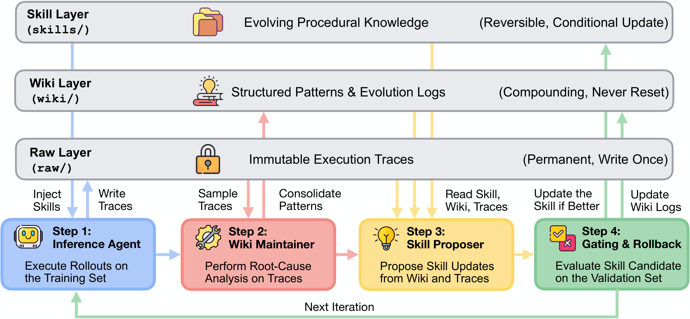

WikiSkill: Compiling Agent Experience into a Persistent Wiki for Skill Evolution (Google)
TL;DR
- "WikiSkill: Compiling Agent Experience into Persistent Knowledge for Skill Evolution" (arXiv 2608.27454; Liyan Tang, Cyrus Rashtchian, Chun-Sung Ferng, Andrew Tomkins, Da-Cheng Juan, Tu Vu — Google Research, Tu Vu also Virginia Tech) splits the agent workspace into three layers that skill-evolution systems normally collapse: immutable raw traces, a persistent wiki of consolidated knowledge, and the executable skills themselves. The asymmetry is the whole design — a rejected skill update is rolled back, but the wiki is never rolled back.
- Across five benchmarks (LiveMath, SealQA, SpreadsheetBench, OfficeQA, ALFWorld) and five models (Qwen-3.5-4B/9B, Qwen-3.6-27B, Gemma-4-31B, Gemini-3.5-Flash), WikiSkill has the best average for every model, beating the strongest competing skill-evolution method by +3.3 / +5.1 / +10.0 / +5.8 / +12.0 points. Every number averages three independent runs of the full evolution pipeline, with paired bootstrap significance testing.
- Two findings worth more than the headline. Skill evolution complements scale but can also substitute for it: gains within the Qwen family grow with model size (+12.3 → +17.5 → +23.9), yet Qwen-3.5-9B with skills (47.4) beats Qwen-3.6-27B without them (39.4). And skills transfer across families, sometimes beating self-evolved ones — Qwen-3.6-27B's skills lift Gemma-4-31B on LiveMath to 73.7 against 56.7 for Gemma's own. The ablation says the wiki carries it: removing persistent knowledge costs 15.0 points of average performance.
Why this matters
Two things are worth separating here, because the framing that circulated on X gets one of them backwards.
What WikiSkill does not do is separate skill retrieval from skill execution. It does the opposite on purpose: every active skill is injected in full into the inference agent's system prompt, precisely so retrieval and triggering failures cannot confound the measurement of skill quality. Retrieval is named in the limitations as the thing this setup does not evaluate.
What it does do is separate three things that skill-evolution pipelines conflate — the raw experience, the knowledge distilled from it, and the executable artifact. In EvoSkill the accumulated insight lives in a flat feedback history of past proposals; in Trace2Skill it is consolidated directly into skill patches; in SkillOpt it lives in rejected-edit feedback and epoch-wise meta guidance. In all three, what the system has learned exists only as a by-product of the optimization history. WikiSkill makes it a first-class, persistently maintained object — and shows by ablation that this object carries most of the gain.
The separation that does fall out of the results is a different and more interesting one: discovering good procedural knowledge and executing it are distinct capabilities. A 4B model's skills can make a 31B model much better while making the 4B model itself slightly worse. That is the finding to carry forward, and it is an argument for evolving skills wherever it is cheapest and deploying them wherever they will be executed best.

Figure 2 from the paper. Read the right-hand annotations as the contract: traces are write-once, the wiki compounds and is never reset, only the skill layer is reversible. Note that the inference agent's arrows touch skills and raw traces but never the wiki — that restriction is deliberate and ablated.
The core idea
A skill here is the now-standard filesystem artifact: a directory whose SKILL.md carries frontmatter metadata plus full procedural instructions and applicability conditions. WikiSkill adds a second file per skill, PURPOSE.md, which points back at the wiki patterns that motivated its creation — a provenance link from artifact to evidence.
The three layers:
| Layer | Contents | Write policy |
|---|---|---|
raw/ |
Complete execution traces: reasoning, tool calls, outputs, final answers | Immutable, write-once |
wiki/ |
patterns/ (one markdown file per failure mode or successful strategy, with workarounds), index.md, logs.md, skill-impact.md |
Compounds, never reset, never rolled back |
skills/ |
Active skills the inference agent reads | Reversible; reverts on a failed validation gate |
Two of the wiki's files are doing more work than the pattern pages. logs.md is a chronological record of what the maintainer found each iteration. skill-impact.md is written programmatically by the outer harness after every gate, recording the proposal metadata, target skill, the unified diff, the validation score, and whether it was accepted or rejected. That file is not an LLM's summary of what happened; it is a ground-truth audit trail, and it is what stops the proposer from re-proposing something that has already been tried and rejected.
The loop each iteration: the Inference Agent rolls out on the training tasks with the current skills; the Wiki Maintainer reads a sample of those traces alongside the existing wiki and patches the pattern pages; the Skill Proposer reads the updated wiki and pulls whatever traces it wants, then emits one atomic proposal; a gate evaluates the candidate skill set on validation and keeps it only if it beats the best score so far. Rejected skills disappear. The wiki keeps everything.
How it works
The loop in one sentence. Run the agent, write down what you learned in a notebook that is never erased, propose one change to the skills based on that notebook, and keep the change only if a held-back set of tasks says it helped. Everything else is detail about who is allowed to read the notebook.
One skill, start to finish
The paper's case study is Qwen-3.6-27B on ALFWorld — a text-based household simulator where an agent picks up, heats, cools, and places objects, and where the characteristic failure is looping.
Step 1 — Run the tasks and keep every log. The agent attempts the 39 training tasks with whatever skills currently exist (at iteration 0, none). Every trajectory is written to the raw layer and never touched again.
Step 2 — A separate agent reads a sample and writes down what it saw.
Not all of it: at most 8 traces per iteration, at most 5 failing and up to 3 passing, each capped at 15,000 characters. Failures are for root-cause analysis, successes to identify what is working and avoid breaking it. At iteration 0 the maintainer notices a specific pathology and creates a pattern page, take-examine-move-loop.md: the agent takes an item, examines it, puts it back where it was, and repeats.
Step 3 — A third agent proposes exactly one change to the skills.
It does not get a fixed bundle of traces. It starts with the wiki index, the impact tracker, and a one-line pass/fail summary of every training task, then uses a file-reading tool to pull the specific pattern pages and traces it wants. Its output is atomic: create one skill, or patch one existing skill. At iteration 0 it proposes goal-directed-action.
Step 4 — The gate decides, and the record survives either way.
goal-directed-action scores 0.72 on validation, below the running best, and is rejected. The skill vanishes. But the harness appends the full diff and the rejection to skill-impact.md, so the next proposer knows exactly what was tried and that it did not work.
Step 5 — The next proposal is informed by the failure.
At iteration 1 the proposer writes break-repetition-loop, and its PURPOSE.md states the reasoning out loud: the previous attempt was rejected for being too abstract, so this version is concise and uses concrete action patterns. Its rule is a specific prohibition — Never Return an Item to Its Origin Location — with a failing example (take clock from desk → examine → move clock to desk) and a successful one (take clock → go to shelf → move clock to shelf). Validation 0.78. Accepted.
Step 6 — Evidence accumulates and the skill is refined, not replaced.
Later rollouts surface a variant the first rule does not cover, and the maintainer opens multi-operation-loop.md: the agent cycles operations on the same item without checking completion. At iteration 4 the proposer patches the existing skill with a second rule, Each Operation Type ONCE Per Item, plus an explicit anti-pattern (take → operate → move → take = infinite cycle) and its fix. Accepted again.
Step 7 — Stop. The loop runs to a fixed iteration budget (accepted updates are reported across iterations 0–7), terminating early only if validation hits 1.0.
![Left, the persistent wiki layer: skill-impact.md showing iteration 0 create goal-directed-action REJECTED with its diff, iteration 1 create break-repetition-loop ACCEPTED, iteration 4 update ACCEPTED; logs.md with chronological entries and validation scores; pattern pages take-examine-move-loop.md and multi-operation-loop.md with per-iteration evidence. Right, the active skill layer: PURPOSE.md explaining that the earlier proposal was rejected for being too abstract, and SKILL.md with trigger, two rules, an anti-pattern and a fix](assets/skill-library-google/fig2.png)
Figure 3 from the paper — the same worked example, laid out as files. The red arrow is the point of the architecture: the rejection at iteration 0 is still readable at iteration 1, which is why the second proposal is concrete where the first was abstract.
The machinery behind steps 1–4
Four short equations, one per component.
Rollout. At iteration \(k\):
\(x_i\) is a task instance, \(\pi\) the inference agent, \(S_{k-1}\) the active skill set left by the previous iteration, and \(\tau_i\) the resulting trajectory — a sequence of observations and actions ending in a predicted answer. The full text of every skill in \(S_{k-1}\) is injected into \(\pi\)'s system prompt, which is what removes retrieval from the experiment.
Consolidation. The Wiki Maintainer \(\mathcal{M}_{\text{WM}}\) turns sampled traces into an updated wiki:
\(W_{k-1}\) is the entire wiki as it stood, \(\mathcal{T}_{\text{sample},k}\) the stratified sample of at most 8 traces, and \(W'_k\) the intermediate wiki state. It edits by patch — appending, replacing, inserting spans — rather than rewriting pages, revises index.md when pages change, and appends its findings to logs.md. There is no cap on how many patterns it may create or edit per iteration; it decides.
Proposal. The Skill Proposer \(\mathcal{M}_{\text{P}}\) emits a candidate change:
\(W'_k\) is the freshly updated wiki, \(S_{k-1}\) the current skills, \(\mathcal{T}_{\text{train},k}\) all of this iteration's training trajectories — accessed on demand through a read tool rather than pre-loaded, which is how the proposer avoids exhausting its context on long execution histories. \(P_k\) targets exactly one skill.
Gating. Apply the proposal to get a candidate set \(S'_k\), score it on validation, and:
\(\mathcal{R}(\mathcal{T}_{\text{val},k})\) is the mean score of the candidate skills on the validation split and \(\mathcal{R}_{\text{best}}\) the best validation score seen so far, initialized by evaluating the empty skill set. Strictly greater — a neutral proposal is rejected. Then, regardless of the decision, the harness writes the outcome into the wiki: \(W_{k}\leftarrow\text{Update}(W^{\prime}_{k},P_{k},\mathcal{R}(\mathcal{T}_{\text{val},k}),a_{k})\), where \(a_k\in\{\text{Accepted},\text{Rejected}\}\). That single line is the architecture's whole thesis. Skills are reversible; knowledge is not.
# WikiSkill evolution loop (Algorithm 1)
S <- {}; W <- {} # skills and wiki both start empty
R_best <- score(rollouts on D_val with no skills) # baseline to beat
for k = 1..K: # accepted updates span iters 0-7
if R_best == 1.0: break
T_train <- rollout inference agent on D_train with S # wiki NOT visible here
T_sample <- stratified sample of <=8 traces # <=5 failing, <=3 passing
W' <- WikiMaintainer(W, T_sample) # patch pattern pages, append logs
P <- SkillProposer(W', S, T_train) # ReAct; reads index, impact tracker,
# then pulls pages/traces on demand
S' <- Apply(S, P) # one skill created or patched
r <- score(rollouts on D_val with S')
if r > R_best: S <- S'; R_best <- r; a <- Accepted
else: a <- Rejected # skills roll back ...
W <- Update(W', P, r, a) # ... wiki records diff + outcome
return S, W
Caveats, in one place
Retrieval is out of scope by construction. Full skill injection removes triggering failures as a confound, which is the right call for measuring skill quality and the wrong setup for predicting behavior in a library with hundreds of skills. The paper says so in its limitations.
Validation splits are small. 10 to 40 tasks depending on benchmark, matched to prior work. The mitigation is three full independent evolution runs per cell plus paired bootstrap testing, not a larger split — so individual gate decisions are noisy even where the reported averages are not.
The gate is strict, and the paper knows it. Requiring a strict improvement rejects neutral proposals that might have enabled later gains. It is adopted for comparability with SkillOpt and EvoSkill rather than because it is believed optimal.
The wiki grows without bound. No pruning mechanism exists. With 6.3–8.9 patterns created and 7.0–18.4 edits per run on average this is fine; over long deployments it is exactly the failure mode that motivated the paper in the first place, one level up.
One cell is degenerate. Gemini-3.5-Flash on ALFWorld hits 100% validation before evolution starts, so every method — including no-skill — reports the same 85.9, and Gemini contributes no ALFWorld source skills to the transfer table.
Negative transfer is real and unpredicted. Qwen-3.5-4B's SpreadSheet skills drop Gemini-3.5-Flash from 50.5 to 18.1. The diagnosis is convincing (low-level workarounds and fragmented diagnostics that a stronger model does not need and that burn its interaction budget), but nothing in the method anticipates or screens for it.
Results
- Every model, best average. Against the strongest competing method per model: Qwen-3.5-4B 38.5 (+3.3), Qwen-3.5-9B 47.4 (+5.1), Qwen-3.6-27B 63.3 (+10.0), Gemma-4-31B 54.9 (+5.8), Gemini-3.5-Flash 68.1 (+12.0). Individual jumps are large — Gemini on LiveMath 33.0 → 72.6 and SpreadSheet 50.5 → 76.6, Qwen-3.6-27B on ALFWorld 52.8 → 77.6 and SpreadSheet 40.8 → 81.7.
- Baselines are inconsistent where WikiSkill is not. EvoSkill lifts Qwen-9B on LiveMath 28.2 → 58.1 but degrades Gemma-4-31B on the same benchmark 33.9 → 29.8; SkillOpt degrades Gemini on SealQA 29.4 → 28.2. Reliability, not just magnitude, is the claim.
- Scale and skills compound — and substitute. Within Qwen, average gains grow with size: +12.3 (4B), +17.5 (9B), +23.9 (27B), most starkly on SpreadSheet (+6.5, +9.3, +40.9). Yet Qwen-3.5-9B with skills (47.4) beats Qwen-3.6-27B without (39.4).
- The ablation is the paper's real result (Gemini-3.5-Flash, four configurations). No skills 40.4. Skill evolution with no wiki at all 48.7. Add the wiki for the proposer: 63.7 — a +15.0 jump, with LiveMath 51.3 → 72.6 and SpreadSheet 49.9 → 76.6. Persistent knowledge accumulation, not the evolution loop, is where the performance lives.
- Letting the inference agent read the wiki makes things worse: 63.7 → 60.9, with LiveMath falling 72.6 → 64.8. The hypothesis is that an agent solving tasks from the wiki produces trajectories that no longer diagnose the skills, so the training signal degrades. Whatever the mechanism, it is a concrete argument for keeping the knowledge store out of the execution path.
- Cross-family transfer, sometimes beating self-evolution. Qwen-3.6-27B's skills take Qwen-3.5-9B on SpreadSheet to 50.5 (none 24.3, self 33.6) and Gemma-4-31B on LiveMath to 73.7 (none 33.9, self 56.7). Small-to-large works too: Qwen-3.5-4B's skills lift Gemma-4-31B to 73.1 on LiveMath and 66.9 on ALFWorld. The sharpest case is OfficeQA, where Qwen-3.5-4B's own skills hurt it (30.2 → 28.5) while helping Qwen-3.6-27B (42.1 → 52.9) — the 4B model writes multi-step search procedures it cannot itself follow across long contexts.
- What the artifacts look like. Qwen models write long skills (118.9–128.6 markdown lines), Gemma-4-31B compact ones (45.1). SpreadSheet drives the longest skills (142.5 lines) and most patterns (9.8); LiveMath the shortest (84.6) and fewest (4.4). Refinement keeps happening: only 39–52% of accepted updates land in the first two iterations, and on SealQA 28% arrive in iterations 5–7.
How it connects
- Rethinking Self-Evolving Agents / OEO — the direct collision, and both papers beat the same baseline. OEO's thesis is that with a strong enough optimizer you should delete the prescribed pipeline and hand the model a contract; WikiSkill's is that you should add structure — a fourth agent, a persistent store, a programmatic audit trail. Both outperform SkillOpt. The reconciliation is probably OEO's own capability-dependence finding: a frontier optimizer can hold the accumulated context in its head and compose its own process, while everything below that needs the wiki to externalize it. Someone should run WikiSkill's ablation with OEO's GPT-5.5 optimizer and see whether the +15.0 survives.
- MSCE: Converting Agent Memory into Executable Skills — the closest architectural relative. MSCE layers grounded step traces, reusable procedural policies, and declarative environmental cognition, and promotes evidence-backed policies with positive estimated gain into skills carrying their own metadata. WikiSkill's three layers map onto that almost cleanly, with
PURPOSE.mdplaying MSCE's evidence link. The difference is governance: MSCE promotes on an estimated-gain criterion computed from reflection-weighted values; WikiSkill promotes on a measured validation score and keeps the rejected evidence anyway. Measured-and-strict versus estimated-and-graded is the live design choice for skill promotion. - Agent Skills Can Be Harmful — the necessary counterweight, and the reason the transfer table should worry you. That study found 307 skill-induced failures dominated by topically relevant skills whose examples and defaults get read as requirements (86/125 functional failures), plus efficiency regressions from skills that turn checklists into mandatory work. WikiSkill's negative-transfer case is exactly that mechanism in the wild: Qwen-3.5-4B's single-line-Python and string-conversion workarounds are read by Gemini as requirements, blocking end-to-end scripts and burning its budget, for a 50.5 → 18.1 collapse. Validation gating catches this for the source model and cannot catch it for any other, which is a strong argument for re-gating any transferred skill.
- Living-Harness — the same commit discipline in a different substrate. Living-Harness gates candidate repairs on schema, scope, evidence, constraint, and merge checks before they touch episodic memory or a state graph; WikiSkill gates skill edits on validation but lets wiki writes through ungated. Two different answers to which store deserves protection, and WikiSkill's ablation is evidence for the permissive option — the ungated store is where the +15.0 lives.
- Meta-Harness — explicitly named as complementary: WikiSkill evolves reusable procedural skills while holding the broader harness fixed, where harness-optimization work searches over prompts, context, tools, memory, and workflows. Worth reading as a scoping decision, since the two directions have not yet been run against each other at matched budget, and the skill layer is a much cheaper surface to evolve than the harness.
Critical take
The ablation makes the paper, and it also somewhat undercuts the framing. Take the wiki away and WikiSkill scores 48.7; put it back and it scores 63.7. That single comparison is worth more than the entire five-model main table, because it isolates a mechanism rather than a system. But it means the contribution is narrower than "a framework": it is the observation that skill-evolution proposers do much better when a durable, structured record of prior findings and prior rejections is maintained for them. That is a strong, useful, actionable finding — and it is one ablation, on one model, on four of the five benchmarks.
The main table is honest but hard to attribute. WikiSkill differs from its baselines along at least four axes at once — a dedicated maintainer agent, a persistent pattern store, a programmatic impact tracker, and a ReAct proposer that fetches traces on demand — and only the persistent-knowledge axis is ablated. How much of the +12.0 over SkillOpt on Gemini comes from the audit trail versus the on-demand trace access is unknown. The case study makes the audit trail look decisive (the second proposal is concrete because the first was rejected for being abstract), but a case study is not a measurement.
The transfer results are the most interesting and the least controlled. "Skills evolved by other models can outperform self-evolved skills" is a genuinely surprising claim and the numbers support it, but the mechanism the paper offers — specificity level matched to executor capability — predicts the direction only in hindsight. Notably nothing in the pipeline optimizes for transferability, so the good cases are luck and the 50.5 → 18.1 collapse is the same luck running the other way. A transferability-aware objective, or simply re-gating a transferred skill on the target model's validation split, is the obvious next step and is not taken.
Two smaller things I would want. The wiki has no pruning, which means the paper's own diagnosis — knowledge scattered across an optimization history nobody can systematically reuse — recurs at a longer time scale. And the strict gate means a neutral-but-enabling proposal can never be accepted, which is precisely the kind of move a wiki-informed proposer should be good at making.
If you remember three things
- The asymmetry is the design. Skills are reversible and roll back on a failed validation gate; the wiki is never rolled back, so a rejected proposal still leaves behind its diff, its score, and the reason it failed. Removing that persistent layer costs 15.0 points of average performance (48.7 → 63.7 on Gemini-3.5-Flash) — the accumulation, not the loop, is what works.
- Keep the knowledge store out of the execution path. Letting the inference agent read the wiki during training rollouts lowers final performance (63.7 → 60.9, LiveMath 72.6 → 64.8), apparently because trajectories that lean on the wiki stop diagnosing the skills. The wiki is for the improver, not the executor.
- Discovery and execution are different capabilities. Qwen-3.6-27B's skills beat Gemma-4-31B's own on LiveMath (73.7 vs 56.7); Qwen-3.5-4B writes OfficeQA procedures that hurt itself (30.2 → 28.5) and help a 27B model (42.1 → 52.9); and 4B SpreadSheet skills collapse Gemini from 50.5 to 18.1. Evolve where it is cheap, deploy where it executes well — and re-gate anything you transfer.